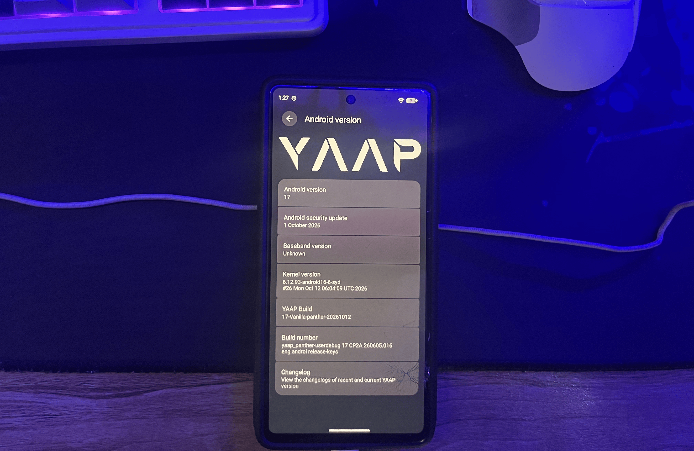
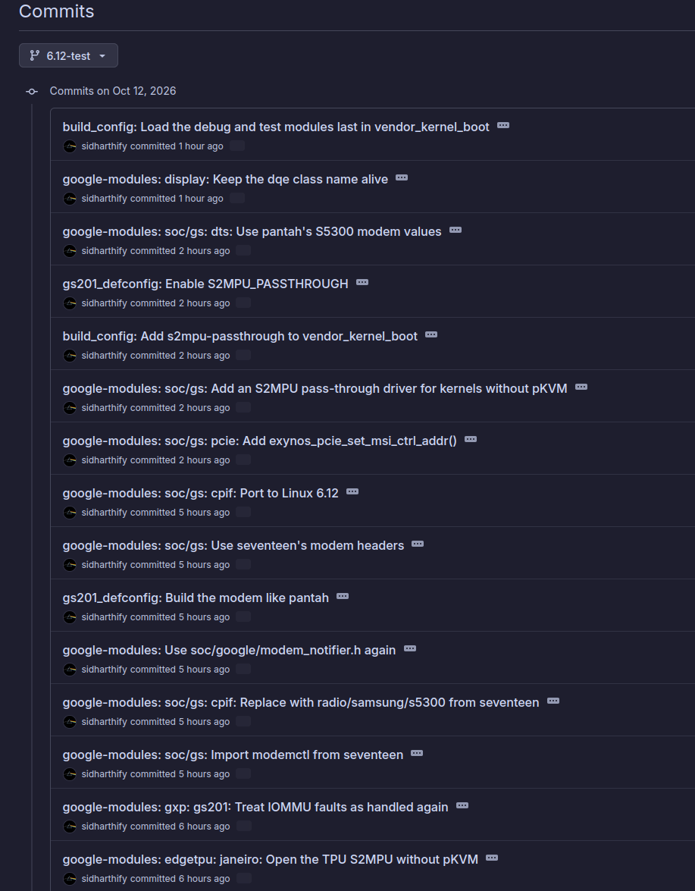

Porting the Pixel 7 kernel to Linux 6.12
Hey, we're back into the AOSP stuff again! In the last kernel post, I threw Bazel out of the Pixel 7
kernel build and replaced it with plain make and a script called
auto. That kernel, syd, is still a 6.1
kernel, like the one the phone shipped with.
Right before starting this, I had finished a big round of optimizations on syd: a rebase onto 6.1.177, CASS, a pile of Sultan's latency and battery patches, and a lot fewer idle wakeups. Once that was done, I was bored, and I wanted a challenge.
Android 16's newest common kernel branch is android16-6.12, and Google has started a 6.12 tree for
gs101 (the Pixel 6's chip, gs201's older sibling). Nothing for gs201, though. So I honestly didn't know if it
was even possible, and I wanted to find out: a Linux 6.12 kernel for the Pixel 7 (panther), running YAAP, with
as much of the hardware working as possible.
Short version for you non-attention having dwellers: it runs as a normal YAAP build. Display, touch, Wi-Fi, charging, USB, audio, the camera and
/data encryption all work, and idle power is where it should be. The modem doesn't work yet.
Getting there took a few days, twelve bugs, a day with almost no electricity, and quite a few dead ends. I'm
keeping the dead ends in, because they're where I learned the most.

The plan
I did not really have a direct outlier for how I'd do this at the beginning.
I knew that I had to port the google-modules to the newer kernel, but how? Well, the Pixel kernel comes in two parts. One is the core kernel, which Google calls the GKI, built from the Android
Common Kernel (ACK). The other is a big pile of vendor modules (google-modules) for everything
specific to the SoC and the board: display, touch, the TPU, the modem, the power management IC, and so on.
The (initial) plan was:
- Take ACK
android16-6.12as the core (6.12.93 when I started). -
Import pantah's 6.1
google-modulesone by one. Why not Google's 6.12 gs101 modules? They're older snapshots, and the vendor blobs in the current Pixel 7 firmware expect pantah's newer interfaces. -
Cherry-pick Google's own gs101 6.12 compatibility commits on top. Those cover the kernel API changes between
6.1 and 6.12. For example, a platform driver's
remove()callback returnsvoidnow. - Build everything with auto, then build a YAAP ROM against it.
Most of the import was boring in a good way: cherry-pick, fix the build, repeat. The first real surprise was Rust.
Rust is not optional anymore
On android16-6.12, ashmem (Android's shared memory driver) is written in Rust. If you build the
kernel without CONFIG_RUST, the kernel builds just fine, but the ROM build fails its VINTF check
later, because the kernel compatibility matrix for this release (FCM 202504) requires
CONFIG_ASHMEM.
Turning Rust on brought two more requirements with it:
-
With Rust and
MODVERSIONSboth on, symbol versions come fromgendwarfksymsinstead ofgenksyms. It reads DWARF debug info, so it needs libdw. My build server didn't have it, so I built elfutils 0.191 locally. -
ACK pins a specific rustc (1.82). The system one was 1.75. Kbuild doesn't fail when the rustc is too old. It
just drops
CONFIG_RUSTfrom the config and keeps going.
That last one is easy to miss, because every make invocation rechecks the toolchain. Forget the
Rust variables once, and Rust is silently gone again. So every build goes through a tiny wrapper:
#!/usr/bin/env bash
# make for the 6.12 tree with the ACK toolchains (clang r536225, rustc 1.82.0.p2)
# and a local elfutils for gendwarfksyms.
# The Rust variables have to be on every make command line: kbuild rechecks the
# toolchain on each run and would drop CONFIG_RUST with the system rustc.
K=$HOME/kernel612/linux-x86
R=$K/rust-prebuilts/linux-x86/1.82.0.p2
E=$HOME/kernel612/host/elfutils
export PATH=$K/clang-r536225/bin:$PATH
export LIBCLANG_PATH=$K/clang-r536225/lib
exec make LLVM=1 RUSTC=$R/bin/rustc HOSTRUSTC=$R/bin/rustc \
BINDGEN=$HOME/yaap/prebuilts/clang-tools/linux-x86/bin/bindgen \
HOSTCFLAGS="-I$E/include" HOSTLDFLAGS="-L$E/lib -Wl,-rpath,$E/lib" "$@"auto does the same thing for 6.12 builds. With that, the kernel built, the modules built, and a userdebug YAAP build passed its checks against it. Time to flash it.
First boot: a crash with no backtrace
The phone showed the Google logo, then rebooted. No kernel log, no adb, nothing on screen.
Thankfully, Pixels have a nice feature here. When the kernel panics, a module called debug-snapshot stores the panic message in a small buffer that survives the reset, and the bootloader prints it in its own log. You can read that log from fastboot:
fastboot oem dmesg | grep -A3 "reset message"Which gave me this:
KP: Oops: Fatal exception: comm:kworker/u32:1 PC:__srcu_read_lock+0x3c/0x88 LR:gpiod_free_commit+0x34/0x304So something freed a GPIO, and the GPIO code tripped over a bad pointer while doing it. But which driver? The record only has the crashing function (PC) and its caller (LR). There are dozens of drivers that free GPIOs, and the buffer is only 1 KiB, so there's no full backtrace in it.
Things that didn't work
Before I found a good way to debug this, I tried a few bad ones, all on the 11th of October. That was the day Jammu flooded. My area had no electricity for the entire day, apart from a few short bits. Every time the power came back, my hopes went up, and two minutes later it was gone again. I was in agony.
Each of the dead ends still taught me something about the phone.
A "reader" slot for pstore
pstore saves the kernel log in a reserved piece of RAM, so the next boot can read it from
/sys/fs/pstore. The Pixel 7 has two slots (a and b), so the plan was: crash the new kernel on
slot a, then boot a known-good kernel on slot b and read the log.
It didn't work, twice over. First, my "known-good" slot b was a mix of images from different builds, and it died
too, with Attempted to kill init! exitcode=0x7f00. I later learned that this is simply first-stage
init failing to mount something. Second, and more important, pstore on this phone doesn't survive a trip
through the bootloader. I checked by writing a marker into /dev/kmsg, rebooting to the bootloader
and back. The marker was gone.
Recovery as a reader
The recovery on this phone runs on the same kernel as Android. So a recovery on my 6.12 kernel crashed in exactly the same place. Obvious in hindsight.
Undocumented fastboot commands
The bootloader has a bunch of fastboot oem commands. I poked at a few, hoping for a RAM dump.
oem uart hung fastboot, and oem ramdump usb turned RAM dumps on, which I then had to
turn off again with fastboot oem ramdump disable. Not my best idea.
Bisecting the module list
The first stage of boot loads modules from a list in the vendor_kernel_boot ramdisk. If I loaded only the first
N modules, I could find out which one crashes. To avoid rebuilding the ramdisk every time, I appended a second
cpio archive to it that overrides modules.load. The kernel unpacks them in order, so later files
win. (This trick turned out to be really useful later.)
With 84 modules (no UFS storage driver yet), there was no GPIO crash, and init died as expected. With 85, the bootloader refused to boot the slot at all:
[I] [PXL] AB Decision: force ABL into fastboot
That's the Pixel's bootloop protection. Neither slot had ever been marked as successfully booted, so after
enough failed tries, it stopped trying. The build had no bootctl, so I booted slot b and marked it
successful by calling the boot HAL directly:
# 8 = markBootSuccessful
service call android.hardware.boot.IBootControl/default 8A truncated module list kept producing new and different failures, though, and each one cost a full flash and boot. I dropped the bisect.
Looking back, the problem with all of these was the same: I was guessing, and every boot gave me another vague symptom to guess about. What I needed was for the phone to just tell me what happened.
Making the kernel write its own crash report
One thing always made it to the bootloader, which was... the panic message. So I made the panic message carry the information I wanted.
On arm64, an oops ends up in die(), which calls panic(). I wrote a debug-only patch
that saves the call chain with stack_trace_save_regs() and prints it into the panic string. The
%ps format prints a symbol name and, for code in a module, the module's name in brackets. Since
the buffer is small, frames inside modules go first, because those name the driver.
static char die_bt[768];
static const char *die_backtrace(struct pt_regs *regs)
{
unsigned long entries[20];
unsigned int n, i;
int len = 0;
if (!regs)
return "";
n = stack_trace_save_regs(regs, entries, ARRAY_SIZE(entries), 0);
/* frames inside modules first: they name the driver */
len += scnprintf(die_bt + len, sizeof(die_bt) - len, " mods:");
for (i = 0; i < n; i++)
if (is_module_text_address(entries[i]))
len += scnprintf(die_bt + len, sizeof(die_bt) - len,
"%ps<", (void *)entries[i]);
/* then the whole chain */
len += scnprintf(die_bt + len, sizeof(die_bt) - len, " bt:");
for (i = 0; i < n; i++)
len += scnprintf(die_bt + len, sizeof(die_bt) - len, "%ps<",
(void *)entries[i]);
return die_bt;
}
/* ...and in die(): */
if (panic_on_oops)
panic("%s: Fatal exception%s", str, die_backtrace(regs));I also made it record the last device whose driver resources were released, in case the bug was a use-after-free from an earlier unbind. One flash later, the bootloader showed this (trimmed):
KP: Oops: Fatal exception mods:tbn_probe [touch_bus_negotiator]< ...
bt:__srcu_read_lock<gpiod_free_commit<gpiod_free<gpio_free<tbn_probe [touch_bus_negotiator]<
platform_probe<really_probe<...<deferred_probe_work_func<...The answer, in one boot. This patch (and the ones that came after it) never gets committed. They live as small scripts that apply the change, build a debug kernel, and revert the source again. The build script checks that the debug string is really in the image, because more than once I flashed a "debug" kernel that wasn't one.
Bug #1: the touch driver frees its GPIOs twice
touch_bus_negotiator (tbn) decides whether the touchscreen bus belongs to the main CPU or to the
AoC (the always-on low-power core). Its probe function requests two GPIOs and an IRQ with the
devm_* helpers, which free them automatically when the probe fails or the driver goes away. But
when the probe fails, it also calls tbn_remove(), which frees them again by hand. So every failed
probe frees them twice.
On 6.1, that was harmless. The second gpiod_free() saw that the GPIO wasn't requested anymore,
warned, and returned. On 6.12, gpiod_free() drops its references to the GPIO controller
every time. At boot, tbn's probe defers a few times while the GPIO controller comes up, and each
retry drops one reference too many. Eventually the controller's gpio_device is freed while it's
still in use, and the next retry touches freed memory. That's the __srcu_read_lock crash.
Fun detail: Google's own 6.12 tree has the same code, including a copy-paste slip that frees the same GPIO twice. The fix is to leave the devm-managed resources to devm:
@@ -570,20 +570,15 @@ static void tbn_remove(struct platform_device *pdev)
if (tbn == NULL)
return;
- if (tbn->mode == TBN_MODE_GPIO) {
- free_irq(tbn->aoc2ap_irq, tbn);
- if (gpio_is_valid(tbn->ap2aoc_gpio))
- gpio_free(tbn->ap2aoc_gpio);
- if (gpio_is_valid(tbn->aoc2ap_gpio))
- gpio_free(tbn->aoc2ap_gpio);
+ /* The GPIOs and the aoc2ap IRQ are devm-managed; devres frees them. */
#if IS_ENABLED(CONFIG_TOUCHSCREEN_TBN_AOC_CHANNEL_MODE)
- } else if (tbn->mode == TBN_MODE_AOC_CHANNEL) {
+ if (tbn->mode == TBN_MODE_AOC_CHANNEL) {
if (!IS_ERR(tbn->aoc_channel_task))
kthread_stop(tbn->aoc_channel_task);
if (tbn->event_wq)
destroy_workqueue(tbn->event_wq);
-#endif
}
+#endif
To test a one-module fix, I didn't want to rebuild and repackage everything. So I built just that
.ko, stripped it with llvm-strip --strip-debug, signed it with
scripts/sign-file and the tree's module key, and used the appended-cpio trick from the bisect to
drop it into the vendor_kernel_boot ramdisk:
# The original ramdisk stays byte-for-byte; a cpio of $dir is appended after it,
# and the kernel unpacks it on top.
(cd "$dir" && find . -mindepth 1 | sed 's|^\./||' | sort | cpio -o -H newc -R 0:0 --quiet) > "ov-$name.cpio"
lz4 -l -9 -f -q "ov-$name.cpio" "ov-$name.cpio.lz4"
cat vkb/vendor_ramdisk00 "ov-$name.cpio.lz4" > "rd-$name"
mkbootimg --header_version 4 ... --vendor_ramdisk_fragment "rd-$name" --vendor_boot "vkb-$name.img"The crash was gone. In its place, a new problem.
Asking init why it gave up
Now the phone didn't crash. It rebooted into the bootloader on purpose, with the reason
reboot bootloader. That means something in early userspace (init, most likely) decided it couldn't
continue. But init's error message only lives in the kernel log, which I couldn't read.
Same trick, second version. A debug patch turns every kernel_restart() into a panic whose message
is the last ~900 bytes of the kernel log, with newlines swapped for | so it fits on one line:
static char dbg_tail[900];
static void dbg_restart_panic(const char *cmd)
{
struct kmsg_dump_iter iter;
size_t len = 0, i;
kmsg_dump_rewind(&iter);
kmsg_dump_get_buffer(&iter, false, dbg_tail, sizeof(dbg_tail) - 1, &len);
dbg_tail[len] = '\0';
for (i = 0; i < len; i++)
if (dbg_tail[i] == '\n')
dbg_tail[i] = '|';
panic("restart(%s): %s", cmd ? cmd : "", dbg_tail);
}
The bootloader's record now ended with EXT4-fs (dm-0): bad geometry and Failed to mount
/system. Not a kernel bug at all. Slot a's system partition was simply gone.
Pixels use Virtual A/B updates. When an update finishes merging into one slot, the other slot's dynamic
partitions (system, vendor, product, ...) aren't valid anymore. My phone had last updated into slot b, so slot
a had a boot image and nothing to boot into. snapshotctl dump confirmed it. From then on, I did all
testing on slot b, which holds a userdebug system built for 6.12.
A small discovery: the klog partition
Pixels keep the bootloader's own logs, including those reset message crash records, in a partition
called klog. Any booted system with root can read it:
strings /dev/block/by-name/klog | grep "reset message"That meant no more racing to catch the bootloader at the right moment. It can't be fetched from fastboot, though ("restricted partition"). That comes up again later.
The boot animation, then init_user0_failed
With slot b sorted, I saw the YAAP boot animation on 6.12 for the first time. A minute later, the phone went to
recovery with "Can't load Android system", reason init_user0_failed. (Tip: never tap "Factory data
reset" on that screen while you're debugging. "Try again" is fine.)
900 bytes of log wasn't enough anymore. The interesting part had scrolled out behind init's shutdown messages. I needed the whole kernel log.
A full kernel log you can fetch from fastboot
The idea: right before rebooting, the debug kernel writes the entire kernel log into a partition, and I read it
back from fastboot. Which partition? vendor_boot_a. Slot a was dead anyway, and fastboot lets you
fetch vendor_boot partitions (unlike klog):
fastboot fetch vendor_boot_a kmsg.img
grep -a -b "KMSGDUMP" kmsg.img # find the dumps and their offsets
It took three tries to get the writing side right. To tell them apart, the panic message started with the
dump's result, dump=<n>, so the bootloader record said whether the write worked.
The first version opened /dev/block/by-name/vendor_boot_a and used kernel_write(). It
got dump=-3013, which is my "write failed" offset plus -EACCES. Even file writes from
inside the kernel go through SELinux, with the credentials of whoever called them, which here was init.
The second version skipped files entirely. It finds the partition by its GPT name inside the kernel and writes raw bios to the block device. No VFS, so no SELinux.
The third turned it into a ring. Otherwise the next reboot (say, out of recovery) would overwrite the boot I actually cared about, so there's an index at the start, and each dump goes into the next 2 MB slot.
The core of version 2:
static int dbg_match_part(struct device *dev, const void *name)
{
struct block_device *bdev = dev_to_bdev(dev);
return bdev->bd_meta_info &&
!strcmp((const char *)bdev->bd_meta_info->volname, name);
}
/* buf must come from vmalloc and size must be a multiple of PAGE_SIZE */
static int dbg_bio(struct block_device *bdev, loff_t off, char *buf,
size_t size, blk_opf_t opf)
{
size_t done = 0;
int ret = 0;
while (done < size && !ret) {
struct bio *bio = bio_alloc(bdev, BIO_MAX_VECS, opf, GFP_KERNEL);
bio->bi_iter.bi_sector = (off + done) >> SECTOR_SHIFT;
while (done < size &&
bio_add_page(bio, vmalloc_to_page(buf + done), PAGE_SIZE,
0) == PAGE_SIZE)
done += PAGE_SIZE;
ret = submit_bio_wait(bio);
bio_put(bio);
}
return ret;
}
/* ... */
dev = class_find_device(&block_class, NULL, "vendor_boot_a",
dbg_match_part);Later I added a periodic dump as well: every few seconds early in boot, then every 20 seconds, into a fixed slot. That way even a hang that ends in a hardware watchdog reset leaves a log behind.
This was the turning point of the whole port. From here on, every failed boot left a full kernel log, and debugging turned into reading logs instead of guessing.
Two different vbmeta keys (not the kernel)
The first full log showed why /data never came up:
vold: keystore2 Keystore createOperation returned service specific error: -33
vold: decryptWithKeystoreKey failed
-33 is KeyMint's INVALID_KEY_BLOB. vold couldn't unwrap the key that protects
/data.
My first theory was that my repacked boot.img was missing its AVB footer, and with it the security
patch level that KeyMint checks. I fixed that. It didn't help.
The real cause was that the phone's data had been created under my 20261009 release build, whose vbmeta is signed with my release key. The test build's vbmeta was signed with a different key. KeyMint binds its keys to the key that signed vbmeta, even with an unlocked bootloader. A different vbmeta key looks like a different device, so the old key blobs are rejected. I know, this is very dumb of me to forget that userdebug builds don't get signed with release (in my configs, at least). But yeah.
For testing, I flashed the release vbmeta. For YAAP releases, it means the vbmeta signing key has to stay the same, or users' data won't decrypt after an update.
S2MPUs, and bug #3: the GSA
With the right vbmeta, the next error was further along:
gsa 17c90000.gsa-ns: mbox cmd=0x49 returned err=1
exynos-ufs 14700000.ufs: kdn: failed to program key; err=-22
/data is encrypted inline by the UFS controller. To set that up, the kernel asks the GSA (a small
security processor inside Tensor) to program the key into the UFS key manager (KDN). Command
0x49 is exactly that, and the GSA said no. /data mounted, but read back as garbage.
The UFS and GSA drivers made the same calls as on 6.1. The difference was in something called an S2MPU.
What's an S2MPU?
An S2MPU (stage-2 memory protection unit) is a small firewall that sits between a hardware block and RAM. Any memory access the block makes on its own (DMA) has to pass through it, and it decides which pages that block may touch. Tensor has dozens of them: one for the GSA, one for USB, several for the camera, and so on.
On Pixels, the one programming them is pKVM, the protected hypervisor that runs above the kernel. The kernel asks it to open an S2MPU for a device, and pKVM sets up the permissions. After a reset, an S2MPU blocks everything until someone configures it.
On 6.1, the GSA mailbox driver asks pKVM to set up the GSA's S2MPU before every command that makes the GSA read
memory. On 6.12, that pKVM S2MPU driver doesn't exist (yet): android16-6.12 dropped the pKVM IOMMU
API it was built on. So that code path was compiled out, and nobody opened the GSA's S2MPU. The GSA tried to
read the key from RAM, got blocked, and failed.
While digging, I also found out why the rest of the phone worked at all. The S2MPU driver that does exist in 6.12 only binds to gs101-style nodes, and pantah's device tree has 38 S2MPU nodes in the pKVM style. So on 6.12, no S2MPU is driven at all. The display and UFS work only because the bootloader leaves their S2MPUs open. The GSA's starts powered off, so it wakes up locked.
Google's comment in the GSA driver even spells out half the story:
Since GSA SYSMMU_S2 is in GSACORE power domain, we need grab wakelock in order to make sure it is powered.
So the fix, in the non-pKVM path: take a GSA wakelock (which powers the GSA core and its S2MPU), then switch the
S2MPU to pass-through by clearing the enable bit in its control register. pKVM's own code uses
CTRL0 = 0 for the same thing when the hypervisor is off.
/* S2MPU control register; clearing ENABLE lets all traffic through */
#define S2MPU_REG_NS_CTRL0 0x0
static int gsa_data_xfer_prepare_locked(struct gsa_mbox *mb)
{
int ret;
if (WARN_ON(mb->wake_ref_cnt >= MAX_GSA_WAKELOCK_CNT))
return -EINVAL;
if (mb->wake_ref_cnt) {
/* just bump wake ref count */
++mb->wake_ref_cnt;
return 0;
}
ret = gsa_send_mbox_cmd_locked(mb, GSA_MB_CMD_WAKELOCK_ACQUIRE,
NULL, 0, NULL, 0);
if (ret < 0) {
dev_err(mb->dev, "gsa wakelock acquire failed (%d)\n", ret);
return ret;
}
++mb->wake_ref_cnt;
/* GSACORE may have been powered down, so open the S2MPU every time */
if (mb->s2mpu_base)
writel(0, mb->s2mpu_base + S2MPU_REG_NS_CTRL0);
return 0;
}The trade-off, to be clear: pass-through means the GSA's S2MPU no longer isolates anything. That's what any kernel without pKVM S2MPU support gives you, but it's worth saying.
Bug #4: pl330 reads its registers from a nonsense address
The next crash came from the backtrace patch again. The chain ran from the GPS driver, through SPI, into the pl330 DMA engine:
pl330_tasklet [pl330] < pl330_issue_pending < samsung_dmadev_trigger [samsung_dma]
< s3c64xx_spi_transfer_one_message < bcm_rxtx_work_func [bcm47765]
Google's 6.12 copy of pl330.c changed how it reads the "wrapper" register addresses from the
device tree, from reading one 32-bit cell to of_translate_address(). Pantah's device tree has one
32-bit address per channel, but the node sits on a bus with #address-cells = <2>, so
of_translate_address() reads two cells per entry. Channel 0's address became
0x10114400_10114420: two neighbouring addresses glued together. The first access to it crashed.
- return ioremap(of_translate_address(np, reg_list + num), SZ_32);
+ return ioremap(be32_to_cpup(reg_list + num), SZ_32);
While comparing the files, I noticed one more difference: when a DMA request finishes, upstream pl330 and
pantah's copy reset req_running. Google's older snapshot lost that line, so I put it back too.
It boots (almost), and bug #5: one missing suffix
After the GSA and pl330 fixes, Android's framework started: zygote, system_server, the works. But it sat on the boot animation until the system_server watchdog crashed the kernel on purpose:
KP: sysrq triggered crash by watchdogThe periodic dump showed why. The thermal and USB HALs were crash-looping, and system_server waits for both, so it stalled until its watchdog gave up. The USB HAL was failing because there was no USB controller. Why?
Another debug hook. At 60 and 180 seconds after boot, print every device still waiting in the deferred-probe
list (the kernel records why), plus the stack of every task currently inside really_probe():
platform 11210000.usb: deferred probe pending: platform: supplier 11200000.phy not ready
platform 11200000.phy: deferred probe pending: platform: supplier i2c-max77759tcpc not ready
platform google,charger: deferred probe pending: platform: supplier i2c-max77759tcpc not ready
platform google,cpm: deferred probe pending: platform: supplier i2c-max77759tcpc not readyA neat chain: the USB controller waits for the USB PHY, which waits for the Type-C controller (TCPC). So does the charger. And the TCPC never showed up.
The 6.12 TCPC driver asks for its interrupt line with devm_gpiod_get_optional(dev,
"usbpd,usbpd_int"). The gpiod API only matches properties ending in -gpio or
-gpios. Google renamed the property in gs101's device tree, but not in gs201's. So the "optional"
lookup returned nothing, the driver returned -ENODEV, and -ENODEV is the one probe
error the driver core doesn't log. So nothing in the log mentioned it at all.
- usbpd,usbpd_int = <&gpa9 7 GPIO_ACTIVE_LOW>;
+ usbpd,usbpd_int-gpio = <&gpa9 7 GPIO_ACTIVE_LOW>;After renaming it, the phone booted to the YAAP lock screen on Linux 6.12, and it was charging.
Side note: pantah's board-level nodes (like the TCPC) actually live in the dtbo overlays, not in the SoC's dtb.
fastboot fetch on the dtbo partition plus dtc is a quick way to see what the phone
is really running.
USB, and the firewall again
Charging worked, but USB data didn't. My PC saw the phone try to enumerate and fail:
device descriptor read/64, error -71. So the USB controller was alive, but couldn't move data. That
sounded a lot like the GSA. A blocked S2MPU, this time USB's (s2mpu_hsi0).
The detour: driving every S2MPU
The USB PHY, the USB controller, the GSA and a few others all have calls to the pKVM S2MPU driver, behind
IS_ENABLED(CONFIG_PKVM_S2MPU). Google's kernel-side driver also has a mode for running without the
hypervisor (used in recovery and fastbootd), where it simply switches S2MPUs to pass-through. So my first idea
was the "proper" one: build only the kernel side of that driver, with a new
PKVM_S2MPU_EL1_ONLY option, and let it handle every S2MPU.
That went sideways in a few ways:
- auto put the new module in the wrong partition, because it wasn't in the first-stage list. Easy fix.
-
auto's own vendor_kernel_boot image turned out to be unbootable, on 6.1 too. Its ramdisk is owned by my build
user instead of root, has a
.entry, and uses symlinks. The ROM build always repacks vendor_kernel_boot from the prebuilt modules, so auto's image had simply never been booted before. That's a separate bug to fix in auto. For testing, I built "ROM-style" images with the overlay trick. - Then the phone started freezing on the Google logo, before any kernel log was written. Swapping one thing at a time showed that the new kernel with the old modules booted fine, and the old modules plus only the S2MPU driver froze.
- Soon after, a frozen phone would shut down completely and only came back after holding the power button for about 40 seconds, unplugged. That was my cue to stop flashing experiments.
Wireless adb
I needed a way to test things on a running phone instead of flashing and hoping. USB data was dead, but Wi-Fi worked on 6.12. So: Developer options, Wireless debugging, and then:
adb pair $PHONE:$PAIR_PORT # code from the "Pair device with pairing code" screen
adb connect $PHONE:$PORT
adb tcpip 5555 # pin the port, or adb root moves it somewhere random
adb connect $PHONE:5555
adb root # userdebug build
A root shell over Wi-Fi, on Linux 6.12. Now I could stream dmesg -w to the PC and
insmod the S2MPU driver on the running phone. It bound S2MPU after S2MPU, got to
gdc1, and the stream died about 10 ms later.
That pinned it down. gdc1 sits in the camera's pd-gdc power domain, which was off.
Binding its S2MPU powered the domain on, and the automatic power-off right after locked up the whole chip.
Every boot-time freeze had been this.
Do I even need the generic driver?
Next, I watched the power domains (the genpd summary in debugfs) while turning the screen off and on. The display's domains power-cycled, and the display kept working. So most S2MPUs come back fine after a power cycle. Only a few special ones, like the GSA's and USB's, come back blocking.
For USB, the phone's own log had the clue: dwc3 11210000.dwc3: unknown endpoint event 0. The
controller writes events into RAM, and the driver was reading zeros, because the writes never got there. To
prove it, I wrote a tiny debug module that reads an S2MPU's control register and can clear it:
static int __init s2mpu_poke_init(void)
{
void __iomem *base;
u32 ctrl0, ver, fault;
if (!addr)
return -EINVAL;
base = ioremap(addr, 0x10000);
if (!base)
return -ENOMEM;
ctrl0 = readl(base + REG_NS_CTRL0);
ver = readl(base + REG_NS_VERSION);
fault = readl(base + REG_NS_FAULT_STATUS);
pr_info("s2mpu_poke: %#lx CTRL0=%#x VERSION=%#x FAULT_STATUS=%#x\n",
addr, ctrl0, ver, fault);
if (open) {
writel(0, base + REG_NS_CTRL0);
pr_info("s2mpu_poke: %#lx CTRL0 now %#x\n", addr,
readl(base + REG_NS_CTRL0));
}
iounmap(base);
return -EAGAIN; /* don't stay loaded */
}
It has to run while the S2MPU's power domain is on, or the read stalls the bus. So a small loop on the phone
waited for the USB domain to power up after I plugged the cable in, and loaded the module right then. It read
CTRL0=0x1, meaning enabled with no permissions set, so every access was blocked. Then it wrote
CTRL0=0, the PC enumerated the phone right away, and adb over USB came up.
Bug #6: the real USB fix
The power domain driver already calls exynos_usbdrd_s2mpu_manual_control(1) right after the USB
domain powers on, so pKVM can reconfigure the S2MPU. Without pKVM, that function did nothing. Now it opens the
S2MPU itself:
/*
* Called once HSI0 is powered (exynos-pd power_on_post, dwc3 probe).
* Under pKVM the hypervisor configures the HSI0 S2MPU. Without it, nothing
* does, and the S2MPU comes out of every HSI0 power-up blocking all DMA:
* the controller enumerates but its event writes never reach memory
* ("unknown endpoint event 0"). Switch it to pass-through instead.
*/
int exynos_usbdrd_s2mpu_manual_control(bool on)
{
struct exynos_usbdrd_phy *phy_drd;
if (!IS_ENABLED(CONFIG_PKVM_S2MPU)) {
phy_drd = exynos_usbdrd_get_struct();
if (on && phy_drd && phy_drd->s2mpu_base)
writel(0, phy_drd->s2mpu_base + S2MPU_REG_NS_CTRL0);
return 0;
}
/* ... */
The PHY driver maps the S2MPU from its s2mpu phandle at probe. I flashed the new
vendor_kernel_boot with dd from the root shell (with a sha256 check before rebooting), and USB adb
came up on its own at boot and survived replugging. The generic S2MPU driver is parked on a local branch. The
two targeted fixes, GSA and USB, are what I kept.
The camera, and power domains that never power off
At this point most of the phone worked, but the camera didn't. The TPU driver logged this on every try:
edgetpu janeiro: finalize group: power on failed: -11The Pixel camera stack leans on the TPU, so with the TPU's firmware never booting, the TPU's NNAPI HAL crash-looped and the camera app couldn't open the camera. My first guess was another blocking S2MPU.
The driver never even printed Powering up. Before it powers the TPU on, it asks the firmware
that manages power (ACPM) whether the TPU block is down, and waits until it is. It never was. A small debug
module asked the power management unit directly, and it said the TPU's power domain was on, while the
kernel's own power domain summary said off.
Bug #7: sync_state
The boot log had the answer, once I knew to look for it:
exynos-pd 18062900.pd-tpu: sync_state() pending due to 1cc60000.s2mpu_tpu
Google's power domain driver doesn't really turn off a domain that was on at boot until every device in the
device tree that uses that domain has a driver. That moment is called sync_state. Until then, it
tells the kernel "off" and leaves the hardware on. That makes sense, since you don't want to cut power to a
block whose driver hasn't loaded yet.
The problem was the S2MPU nodes again. Every multimedia domain has S2MPUs in it, and on 6.1 pKVM's S2MPU driver binds them. Without pKVM, nothing does, so the domains wait forever. 13 domains were stuck like this, covering the display, G2D, the video codecs, every camera block, the TPU and the Aurora DSP. All of those blocks stayed powered all the time, which is terrible for battery, and the TPU driver refused to start because the block it wanted to power up was "still up".
It also explained a freeze from the night before. When I tried a generic S2MPU driver, binding the S2MPUs let one domain really power off for the first time, and things went wrong from there.
To test it, I bound a do-nothing driver to only the TPU's S2MPU. The TPU domain finished its
sync_state, really powered off, and then the TPU powered up and loaded its firmware.
Once the block really loses power, two more things show up. The TPU's IO-coherency setting lives in a register that loses its value on power-off, and the driver only wrote it once at probe, so now it has to be restored on every power-up. And the TPU's own S2MPU comes back blocking after a power cycle (bug #8, same as USB). Before, it read open only because it had never been reset.
Bug #9: the TPU reads zeros
With the firmware running, the NNAPI HAL and the camera provider both still aborted. I built the TPU driver with firmware logging on, and the firmware said:
ERR vii_handler_layer.cc:247 - Setup is not done yet received a command of type 0.
Commands go to the TPU through a queue in memory. I dumped the queue from the kernel side and it looked fine.
I even filled it with 0xAA first to make sure the TPU was seeing fresh writes. It was, and it
still said type 0.
So I opened the firmware itself in a disassembler (it's ARM32, loaded at 0x10000000). The log
string's address led to the function that prints it, and that showed where "type" comes from. It's a value
inside the command's payload, a separate buffer the queue entry points to, so an all-zero payload reads as
type 0.
From the kernel side, the payload's address translated fine through the TPU's IOMMU and the page held valid data. So the TPU was reading that buffer as zeros. The TPU's IOMMU (a Samsung SysMMU) has several page table slots, and each TPU client uses its own. Dumping the registers while the firmware answered:
vm0 ctrl=0x1 flpt=0x8d1c0 | vm1 ctrl=0x0 flpt=0x0
Slot 1, the one the HAL's buffers use, was never enabled. Those extra slots get set up through PASIDs, and
Linux 6.12's IOMMU core only does that for devices that declare PASID support, then returns success either
way. How many PASIDs a device gets comes from pasid-num-bits in the device tree, and gs201's TPU
and SysMMU nodes didn't have it. Google added exactly this property to gs101's nodes. So the attach
"succeeded" and did nothing. I'd actually seen a warning about pasid-num-bits early on and
dismissed it as noise.
pasid-num-bits = <3>;With that on the TPU node and its SysMMUs, slot 1 came up and the HAL ran. Then the camera provider died one step later, because the Aurora DSP's SysMMUs were missing the same property, so they got it too.
Bug #10: fault handlers
Killing the HAL in the middle of a job then panicked the whole phone with a SysMMU page fault. On 6.1, the TPU
and DSP drivers had per-device fault handlers that returned -EAGAIN, which the SysMMU driver
treats as "handled". Linux 6.8 removed that kind of handler, and my port kept only the domain-level ones,
which returned 0. The SysMMU driver panics on anything but -EAGAIN. The fix is one line in each
driver.
After all that, the camera works, for both photos and video.
(yes, that is me)
A real ROM build, and a signing detour
Up to here I'd been testing with my debug kernel and hand-patched images. Time for a normal kernel inside a
full YAAP build. It booted straight into recovery with init_user0_failed, because
/data wouldn't decrypt again.
Same family as bug #2. My userdebug builds sign vbmeta with the AVB test key and turn verification off
(--flags 3), on purpose. Signing with my release key alone wasn't enough. KeyMint's root of trust
also covers the verification state, so a vbmeta with verification off still looks like a different device to
data made under a release build.
I didn't want to change how userdebug builds are signed, so for test flashes onto my own phone I re-sign just the vbmeta on the build server. It keeps the same descriptors, but uses my release key and has verification turned on.
avbtool make_vbmeta_image --key release.pem --algorithm SHA256_RSA2048 \
--rollback_index "$ROLLBACK" --include_descriptors_from_image vbmeta.img \
--output vbmeta-flags0.imgWith that, the full ROM booted with my data intact and the camera working.
Battery: turning the domains off for real
The TPU fix only bound the TPU's S2MPU. The other twelve domains were still stuck on. I couldn't just bind every S2MPU with a do-nothing driver, though. The moment a domain really powers off and back on, its S2MPUs come back blocking, like USB and the TPU did.
So I wrote a debug driver that binds one S2MPU at a time and opens it every time its domain powers on, and went through the domains one by one.
I started with the video encoder, because screenrecord uses it and that makes an easy test. After
a real power-on, both of its S2MPUs were blocking. Once they were opened, the encoder's firmware booted and the
recording played fine.
The display's S2MPUs came back blocking after the screen turned on again. Without the fix, that would have been a black screen after the first screen-off. With it, turning the screen off and on worked, and so did the always-on display.
The camera blocks came last, including the one that froze the phone the night before. It didn't freeze this time, so the earlier freeze had come from pKVM's S2MPU driver itself.
That became a small driver, s2mpu-passthrough. It binds every S2MPU so the domains can finish
sync_state, and switches each one to pass-through right after its domain powers on:
static int s2mpu_passthrough_genpd_event(struct notifier_block *nb, unsigned long action,
void *data)
{
struct s2mpu_passthrough *s = container_of(nb, struct s2mpu_passthrough, nb);
/* sent once the domain is fully powered and its secure state restored */
if (action == GENPD_NOTIFY_ON)
writel(0, s->base + S2MPU_REG_NS_CTRL0);
return NOTIFY_OK;
}My generic attempt from before opened the S2MPUs partway through the power domain driver's power-on sequence. The notifier fires after the whole sequence is done. This gives up the S2MPUs' isolation, which a kernel without pKVM can't offer anyway. With the screen off, every multimedia domain is now really off. Only USB (adb was plugged in) and one small always-on domain stay up.
Bug #11: a class named from the stack
The next full ROM, with the battery fix and some modem work in it, dropped to fastboot after two kernel panics:
reset message: KP: Oops: Fatal exception: comm:ueventd PC:string+0xc8/0x120 LR:vsnprintf+0x3a8/0x650
ueventd replays every device's "add" event at boot (coldboot), and the kernel crashed formatting
one of them. The registers held the text SUBSYSTEM=, so some device's class name pointed at
memory that wasn't mapped anymore. From the address, it was most likely a kernel stack that had been freed.
The new piece most likely to be guilty was the modem driver. I dropped it from the module list for one boot,
and the phone came up fine. That boot also gave me the full trace of the bad one, but I still didn't know which
device it was. So I wrote a throwaway module that walks every device and reports any class or bus name that
lives somewhere it shouldn't. It found exactly one, atc, which belongs to the display driver.
- char dqe_name[MAX_DQE_NAME_SIZE] = "dqe";
+ const char *dqe_name;
...
- scnprintf(dqe_name, MAX_DQE_NAME_SIZE, "dqe%u", decon->id);
+ /* the class keeps this pointer, so it must outlive the probe */
+ dqe_name = devm_kasprintf(dev, GFP_KERNEL, "dqe%u", decon->id);
+ if (!dqe_name)
+ return NULL;
dqe->dqe_class = class_create(dqe_name);
class_create() keeps the pointer it's given, and the name was in a local array. Google's gs101
code has the same line. It only bites when the display driver loads in the first boot stage, whose loader
thread exits before coldboot runs. Loading the modem driver only shifted the timing enough for that stack to
get freed first.
Bug #12: a module order that never booted
The ROM with that fix hung on the Google logo, and the watchdog reset it. No kernel log this time, not even in
the bootloader's crash record. But comparing the new first-stage module list with the one that booted showed
ten modules in different places. Most were debug and test modules like exynos-debug-test and the
memory latency monitors, plus a few helpers and my new s2mpu-passthrough. The earlier builds had loaded them last,
because of how the list had been generated back then. This one followed the kernel's list properly, which
puts them early, and that order had never booted on 6.12.
Moving my own driver to the end didn't help, so it wasn't that. The kernel's list now has the order that booted, and the new ROM's first-stage order matches it line for line. Which of the other nine actually hangs is a question for later.
On the way, I found a bug in auto too. It picked a module's partition by substring match, so
nfc.ko landed in the first stage because st21nfc.ko is listed there. It matches
whole names now.
The modem (not yet)
The modem is the last big piece. Google's 6.12 modem driver for gs101 didn't fit gs201's modem, so I swapped in pantah's own S5300 stack from Android 17 and ported it to 6.12. Google's 6.12 device tree had also dropped a reset GPIO and changed two memory region values, and without those the driver panicked at boot.
Now the driver probes and the modem boots its first stage. But after the PCIe link comes back up, the modem
never answers the first request from the modem daemon. Every power-off also logs cannot receive
L23_READY, a PCIe power handshake that's failing. My best guess is the PCIe controller driver, which
differs from the one pantah used on 6.1.
Where it stands
Working on 6.12 right now, in a normal YAAP build:
- Boot, with
/dataencryption - Display and touch
- Wi-Fi
- Charging, USB data and adb
- Audio (through the AoC)
- Thermal sensors and the thermal HAL
- Camera, the TPU and the Aurora DSP
- Hardware video encoding
- Power domains that actually turn off when idle
Thermal was a nice surprise. I expected to port the gs201 thermal driver, but the gs101 one reads gs201's sensors just fine. The thermal HAL crash loop from earlier was just fallout from the missing Type-C chain.
The modem doesn't work yet, and until it does, YAAP releases stay on 6.1.
Wrapping up

This... was certainly a ride. I am very proud of myself for actually putting through this and booting it, but there's way more to do. I also have to release an official build for YAAP with this kernel, so fixing the modem is almost mandatory.
Of the twelve bugs, only five came from 6.12 itself (the double free that 6.12's GPIO code stopped forgiving,
the pl330 address lookup, the TCPC property name, the silent PASID attach and the removed fault handlers). Four
came from running without pKVM's S2MPU driver (GSA, USB, the TPU's S2MPU and sync_state), and the
rest were my signing setup, an old display bug that a new boot timing exposed, and a module order. Most of the
time went into building ways to see what was going on, and much less into the fixes themselves.
The kernel is on the 6.12-test branch of my gs201 kernel repo
here, and the build script is
here.
I'll write a follow-up once the modem works.
If you made it this far, thank you very much for reading!